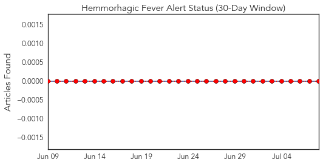
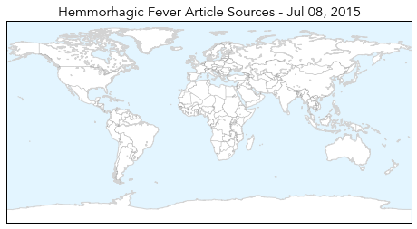
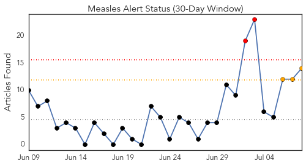
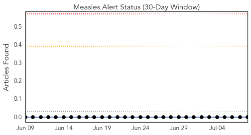
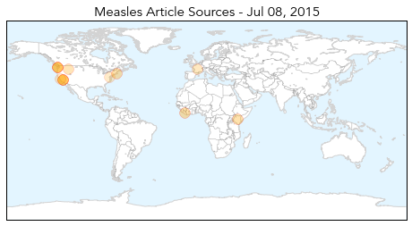
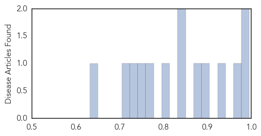

Hemmorhagic Fever
30-Day Web Trend
0 alerts, 0 warnings

30-Day Twitter Trend
0 alerts, 0 warnings

Article Locations
Article Confidences

Top Articles:
-
No articles found for Jul 08, 2015
Top Tweets:
-
No tweets found for Jul 08, 2015
Measles
30-Day Web Trend
2 alerts, 3 warnings

30-Day Twitter Trend
0 alerts, 0 warnings

Article Locations
Article Confidences
Top Articles:
- 0.996
- World: West and Central Africa Region Weekly Humanitarian Snapshot (30 June -06 July 2015)
- 0.981
- Measles virus tracked though genomic testing finds one overseas visitor caused 61 B.C. cases
- 0.967
- The anti-vaxxer threat: A recent study highlights the dangers of science denialism
- 0.923
- Measles kills first patient in 12 years
- 0.891
- Washington Woman Dies from Measles, First Death in 12 Years
- 0.883
- Washington woman who died of measles had been vaccinated
- 0.842
- The Woman Who Died Of Measles Had Been Vaccinated Against It
- 0.836
- Risk of preventable disease is much greater than any risk posed by vaccines
- 0.797
- Measles growing fatal: A woman died in Washington
- 0.772
- Despite lack of evidence, 20% of Ontarians believe some vaccines cause autism: new poll
- 0.741
- The U.S. Just Reported Its First Confirmed Measles Death in 12 Years
- 0.737
- Practices and hesitancy among general physicians in France
- 0.716
- Lax immunization laws in 18 states need to change
- 0.632
- First measles death in United States in 12 years
Top Tweets:
-
No tweets found for Jul 08, 2015